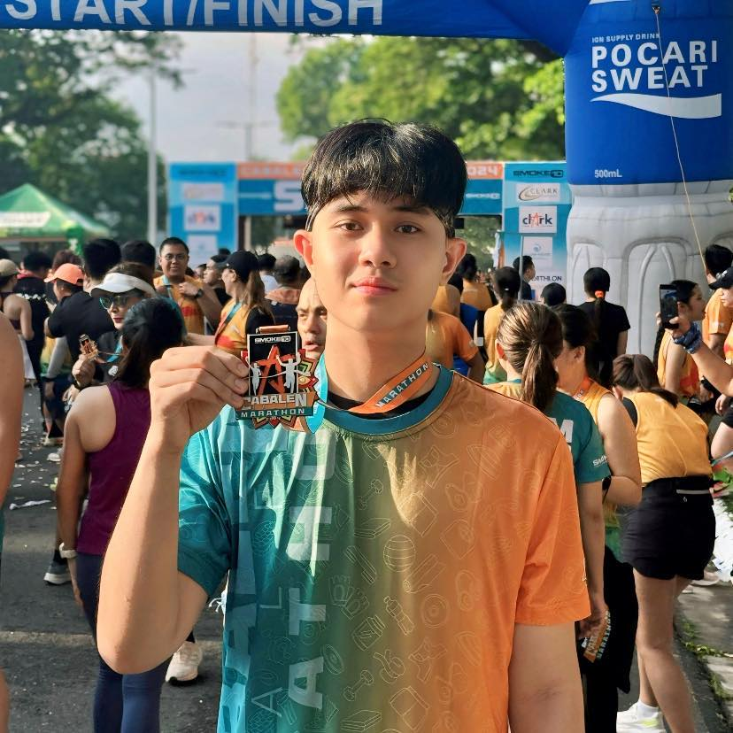

Welcome to the SubZania Voting DApp
The SubZania Voting DApp revolutionizes the electoral process by utilizing blockchain technology to ensure secure, transparent, and tamper-proof voting. Each vote is recorded on the blockchain, providing an immutable record that enhances trust in the electoral system.
By connecting your Metamask wallet, you can participate in this groundbreaking voting process, contributing to a more democratic and accountable society.
Kween Yasmin
Running for President
Kween Yasmin is a visionary leader with a track record in public service, promising innovative policies for a better tomorrow. His commitment to community engagement and sustainable development makes him a strong candidate for leadership.
Kencee Strait
Running for President
Kencee Strait focuses on economic growth and social reforms, advocating for a strong, sustainable future. His plans to enhance education and job opportunities are pivotal for national progress.

Chris Mastree
Running for President
Chris Mastree, with decades of leadership experience, aims to restore integrity and build resilient institutions. His emphasis on transparency and accountability resonates with voters seeking change.
Lou Lawrence
Running for Vice President
Lou Lawrence is dedicated to ensuring equal opportunities for all, with a focus on community and education. Her policies are aimed at fostering inclusion and empowering marginalized voices.
Idol Wistler
Running for Vice President
Idol Wistler champions social justice and environmental sustainability, advocating for the next generation. His commitment to green policies and community welfare sets him apart.
Dic Raider
Running for Vice President
Dic Raider focuses on healthcare and welfare reform, ensuring access to services for every citizen. His comprehensive approach to public health is essential in today's landscape.
Lou Lawrence
Running for Secretary
Lou Lawrence will focus on streamlining communication and organization, ensuring that every meeting runs efficiently and that vital information is easily accessible. My proactive approach to documentation and coordination is crucial for the team's success.
Amy Stake
Running for Secretary
Amy Stake will prioritize clear and timely communication, ensuring that everyone stays informed and aligned with our goals. My meticulous attention to detail and commitment to record-keeping will create a solid foundation for transparent and organized operations.
Arnold Schwarzinegger
Running for Secretary
Arnold Schwarzinegger focuses on improving organizational efficiency, ensuring that all minutes, schedules, and reports are accurate and readily available. My dedication to keeping things structured and accessible is vital to fostering a well-coordinated team environment.